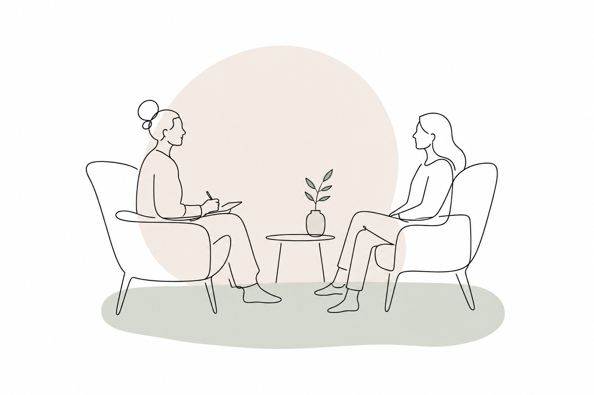

INDIVIDUAL SESSIONS
Sessions last 75 minutes, allowing enough space to slow down, explore and integrate.
Rather than rushing towards solutions, we create time to notice patterns, reconnect with your body and build a greater sense of safety and resilience.
Available:
· Online
· Amsterdam